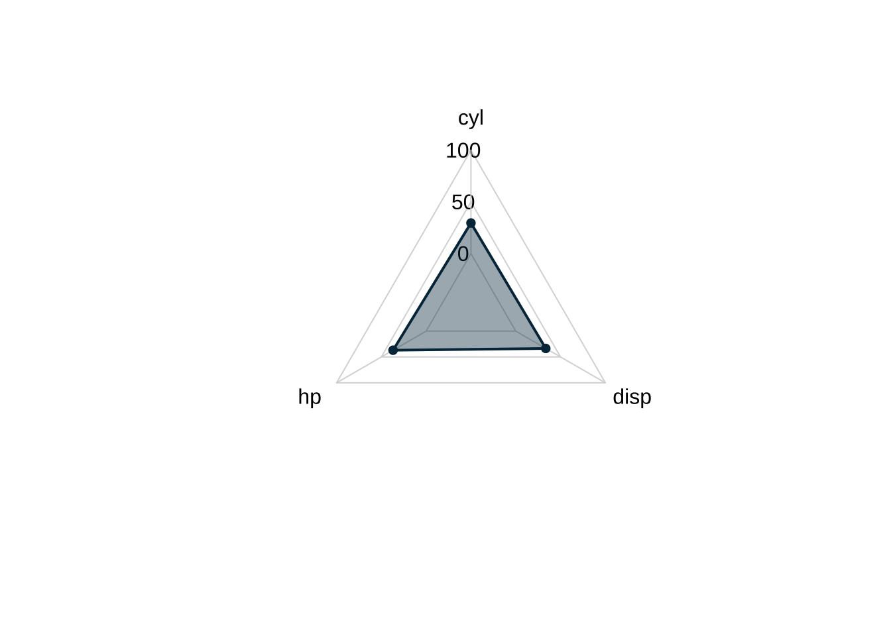
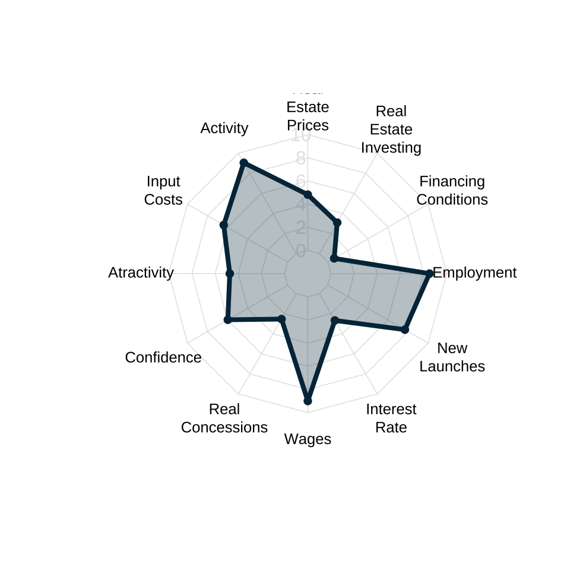
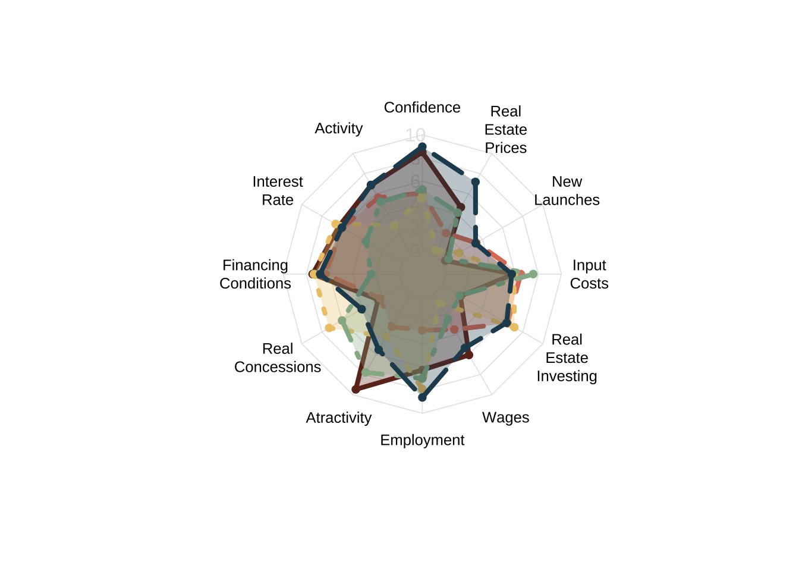

# Data manipulation
library(dplyr)
library(tidyr)
library(stringr)
library(realestatebr)
# Visualization
library(ggplot2)
library(ggradar)
library(fmsb)
# (optional) To import only the plotting function
library(fmsb, include.only = "radarchart")Radar plots
Radar plots show a static visualization of the numeric values of several different categories of a same entity. These charts are also known as spider or web plots, since they visually resemble a spider web. The values of each variable are connected by a straight line and the resulting image is a polygon. These charts are commonly used to quickly access a collection of important variables and to make simple comparisons, and are frequently used in dashboards.

The plot above shows 11 characteristics of a car (Datsun 710, from the mtcars dataset). The vertical distance of each dot from the center represents the magnitude of each variable. Since the overall axis is “fixed” this type of plot is ideal to represent scaled or indexed values. In more general cases, this means some data transformation is needed to achieve a better final result.
Into the wild
There are two options to build radar plots in R using ggplot2: ggradar and fmsb. The latter is not a data visualization package but rather a broader toolset to deal with medical statistics and demographic data. The former is a ggplot2 extension created specifically for radar plots. To exemplify the use of both packages we will look at Abrainc’s Radar of economic conditions of the Brazilian real estate market. This data can be imported easily with my helper package realestatebr.
The code below shows the packages used in this post.
The data
The Abrainc Radar is a collection of 12 variables, structured into 4 subgroups, that aim to capture the overall condition of the real estate market. These groups are: (1) macroeconomic conditions; (2) real estate credit conditions; (3) real estate demand; (4) real estate conditions.
Variables include real estate prices, input costs, and interest rates. All variables are scaled in the 0-10 range, where 10 represents more favorable conditions.
The code below grabs the most recent data and makes minor improvements to the labels of the variables.
# Download the data
radar <- get_abrainc_indicators(category = "radar")
# Better labels for the plot
radar_labels <- c(
"Confidence", "Activity", "Interest Rate", "Financing Conditions",
"Real Concessions", "Atractivity", "Employment", "Wages",
"Real Estate Investing", "Input Costs", "New Launches",
"Real Estate Prices")
radar <- radar |>
mutate(
month = lubridate::month(date),
variable = factor(variable, levels = unique(variable)),
variable_label = factor(
variable,
levels = unique(variable),
labels = radar_labels)
)
# Get data only from the most recent period
current_period <- radar |>
filter(date == max(date)) |>
pivot_wider(
id_cols = "date",
names_from = "variable",
values_from = "value"
)Our data is two columns and all variables are scaled in the 0-10 range, where higher values indicate more favorable conditions.
| NAME | VALUE |
|---|---|
| Macroeconomic | |
| Confidence | 5.97 |
| Activity | 9.05 |
| Interest Rate | 2.67 |
| Real Estate Credit | |
| Financing Conditions | 0.63 |
| Real Concessions | 2.53 |
| Atractivity | 4.74 |
| Market Demand | |
| Employment | 8.51 |
| Wages | 9.00 |
| Real Estate Investing | 3.08 |
| Real Estate | |
| Input Costs | 6.38 |
| New Launches | 7.68 |
| Real Estate Prices | 4.82 |
The Abrainc Radar is a monthly longitudinal panel of data, i.e., a collection of time series. To visualize this data we will select first the most recent period available and compare it to (1) the equivalent period in the previous year; (2) the best equivalent period.
latest_date <- max(radar$date)
last_year <- latest_date - lubridate::years(1)
best_year <- radar |>
filter(month == lubridate::month(latest_date)) |>
group_by(date) |>
summarise(total = sum(value)) |>
slice_max(total, n = 1) |>
pull(date)
compare_best <- radar |>
filter(date %in% c(latest_date, best_year)) |>
pivot_wider(
id_cols = "year",
names_from = "variable",
values_from = "value"
)
compare <- radar |>
filter(year >= lubridate::year(latest_date) - 1,
month == lubridate::month(latest_date)) |>
pivot_wider(
id_cols = "year",
names_from = "variable",
values_from = "value"
)Radar plots in R
First we show the data using ggradar.
ggradar
Using default settings, a minimal radar plot requires specifying the scale of the grid and its units. By default, ggradar assumes that all the numeric data is in a 0-100 range. The data.frame input should be a \(1\times k\) table where \(k\) is the number of variables. The function ignores non-numerical variables by default.
ggradar(
current_period,
grid.min = 0,
grid.mid = 5,
grid.max = 10,
values.radar = c("0", "5", "10"),
axis.label.size = 3
)There are several arguments to improve the visualization. Since we will make several radar plots it’s convenient to create a function to do this.
Code
# Line break the labels
radar_labels <- str_wrap(radar_labels, width = 10)
plot_ggradar <- function(.dat, colors, legend = FALSE) {
p <- ggradar(
.dat,
# Define grid limits
grid.min = 0,
grid.mid = 5,
grid.max = 10,
# Define grid labels
values.radar = c("0", "5", "10"),
grid.label.size = 5,
# Shade polygon
fill = TRUE,
fill.alpha = 0.3,
# Axis labels (outside the circle)
axis.labels = radar_labels,
axis.label.size = 3,
font.radar = "Lato",
# "Size" of the plot
plot.extent.x.sf = 1.5,
plot.extent.y.sf = 1.4,
# Color of the lines and circles
group.colours = colors,
# Size of the circles
group.point.size = 3,
# Width of the line connecting the points
group.line.width = 1
)
if (legend | length(colors) > 1) {
p <- p + theme(legend.position = "top")
}
return(p)
}The improved plot is shown below. From the radar plot, we see that the real economy seems to be in a favorable spot: the activity indicator is high and so are wages and employment. Credit conditions are not favorable as can be seen from the low values of interest rate, financing conditions, atractivity, and real concessions.
plot_ggradar(current_period, "#264653")We can use radar plots to make simple comparisons. This radar plot compares the current period with the comparable period in the previous year. We can see that wages and employment improved considerably while atractivity and real concessions worsened.
plot_ggradar(compare, c("#e76f51", "#264653"))Finally, we can compare the current period with the “best” period. For this exercise, I defined “best” as the period we the highest cumulative score using equal weights for all indicators. Compared to the best period, the current period is worse in all indicators with exception of wages and new launches.
plot_ggradar(compare_best, c("#e76f51", "#264653"))Some Problems
I’ll discuss some general problems of radar plots below but is should be noted that ggradar produces “circular” plots instead of “web” plots. Indeed, a distinctive feature of the radar charts produced by ggradar is that the radar is circular which means the dots are positioned on a radial frame (polar coordinate frame) instead of a conventional cartesian (rectangular) frame. This causes a slight visual distortion: connection dots with a straight line in a circle doesn’t make much sense geometrically.
This distortion is more visible when there are fewer categories; conversly, the distortion is less noticeable when there are many categories. Looking at the documentation of ggradar this might be a conscious decision since the inspiration for the ggradar function is a code developed by Paul Williamson that used radar plots to evaluate clusters defined by 44 different variables.

fmsb
The fmsb package is a companion to the book “Practices of Medical and Health Data Analysis using R”. It offers a multitude of functions and datasets. The main function we will use is the radarchart function. This function expects a wide dataset with atleast three rows. The first row should indicate the maximum value of each column (variable), the second row should indicate the minimum value of each column, and the third row should be the actual/current value of each column.
wide_dat <- pivot_wider(
filter(radar, date == max(date)),
id_cols = "date",
names_from = "variable_label",
values_from = "value"
)
wide_dat <- rbind(rep(10, 12), rep(0, 12), wide_dat[, 2:13])
wide_dat# A tibble: 3 × 12
Confidence Activity `Interest Rate` `Financing Conditions` `Real Concessions`
<dbl> <dbl> <dbl> <dbl> <dbl>
1 10 10 10 10 10
2 0 0 0 0 0
3 5.97 9.05 2.67 0.630 2.53
Atractivity Employment Wages `Real Estate Investing` `Input Costs`
<dbl> <dbl> <dbl> <dbl> <dbl>
1 10 10 10 10 10
2 0 0 0 0 0
3 4.74 8.51 9.00 3.08 6.38
`New Launches` `Real Estate Prices`
<dbl> <dbl>
1 10 10
2 0 0
3 7.68 4.82It’s fairly simple to produce a radar chart using this function.
radarchart(wide_dat)
We can customize the result to get a better visualization.
radarchart(
wide_dat,
axistype = 1,
seg = 5,
# Polygon
pcol = "#023047",
pfcol = alpha("#023047", 0.3),
plwd = 4,
# Grid
cglcol = "grey90",
cglty = 1,
axislabcol = "grey90",
caxislabels = seq(0, 10, 2),
cglwd = 0.8,
# Labels
vlcex = 0.8)Note that radarchart uses straight grid lines (instead of circular) so it doesn’t cause the same visual distortion seen in the ggradar examples above. In this sense, radarchart produces radar plots that are more visually accurate.
Again, we can create a custom function to help make our radar plots.
Code
plot_radarchart <- function(.dat, colors = "#023047", legend = FALSE, labels = radar_labels) {
radarchart(
.dat,
axistype = 1,
seg = 5,
# Polygon
pcol = colors,
pfcol = alpha(colors, 0.3),
plwd = 4,
# Grid
cglcol = "grey90",
cglty = 1,
axislabcol = "grey90",
caxislabels = seq(0, 10, 2),
cglwd = 0.8,
# Labels
vlabels = labels,
vlcex = 0.8
)
}Now we can easily create new radar plots.
wide_compare <- rbind(rep(10, 12), rep(0, 12), compare[, 2:13])
plot_radarchart(wide_compare, colors = c("#e76f51", "#264653"))wide_best <- rbind(rep(10, 12), rep(0, 12), compare_best[, 2:13])
plot_radarchart(wide_best, colors = c("#e76f51", "#264653"))Problems with radar plots
Despite their growing prevalence in data visualization, radar charts are subject to several criticisms. To summarize the main issues, specialists argue that:
- The circular layout makes it harder to interpret the data when compared to simple horizontal/vertical axis. This is essentially the same critique made to pie charts.
- Ranking and ordering. The overall shape and interpretation of radar plots can vary substantially depending on the layout of the variables along the edges.
- Area distortion. Since a radar plot shows a polygon, it’s area scales quadratically instead of linearly. This can lead to biased interpretation of the data, leading one to over-estimate changes.
- Overplotting. Radar plots are not very useful when comparing 4 groups or more.
Ranking distortion
All four plots below show the exact same data but the order of the variables is changed. This results in different shaped polygons and pottentialy different or even conflicting interpretations from the same underlying data.



Overplotting
The plot below compares 5 different periods. Radar charts suffer from overplotting and are generally not useful for comparing more than 3 groups at a time.

For a more in depth analysis on the shortcomings of radar charts see The Radar Chart and Its Caveats.
The alternatives
There are three alternatives to radar plots.
- Lollipop charts
- Parallel trends charts
- Barplots or Column charts
In essence, all of these alternatives simplify radar plots by making the underlying space horizontal/vertical instead of “circular”.
Lollipop charts
Lollipop charts are good at showing the temporal change between the same group of variables. I featured this chart in my ggplot2 tutorials (in Portuguese). The code below shows how to make a simple lollipop chart using this data.
Code
font_add_google("IBM Plex Sans", "IBM Plex Sans")
lolli <- radar |>
mutate(month = lubridate::month(date)) |>
filter(year %in% c(2019, 2023), month == 6) |>
mutate(year = factor(year))
ggplot(lolli, aes(variable_label, ma6, color = year)) +
geom_line(aes(group = variable_label), color = "gray30") +
geom_point(size = 3) +
coord_flip() +
scale_y_continuous(breaks = seq(0, 10, 2), limits = c(0, 10)) +
scale_color_manual(name = "", values = c("#023047", "#fb8500")) +
labs(
title = "Pre and Post-pandemic Market Conditions",
subtitle = "Real estate average market conditions in the first semester of selected years.",
caption = "Source: Abrainc/Fipe (2024)",
x = NULL,
y = "Index (10 = most favorable)"
) +
theme_light(base_family = "IBM Plex Sans") +
theme(
legend.position = "top"
)The chart shows the average values of all 12 indicators in the first semester of 2019 and 2023. When the dots are close, very little has changed; conversely, when the dots are far apart there has been considerable evolution. The colors help guide the visualization.
We can easily see that real estate prices and new launches are on the rise in 2023. Similarly, the job market and overall economy seems stronger as wages, employment, and the level of activity have all increased. Credit conditions, on the other hand, have deteriorated, and the overall actractivity of real estate investment has worsened. The fall in financing conditions and interest rate reflects both the increase in the SELIC rate as well as the increase in all real estate credit lines.
Parallel Trends
A parallel trends chart is quite literally a line plot. In a way, it’s a simplification of radar plots since it connects the numerical values of different categories along a simple rectangular frame. These charts can be adapted to encompass many comparison groups simultaneously so they can be used to overcome one of the shortcomings of radar plots. I’m not the greatest fan of parallel trends chart as they can become very messy.
The code below shows how to build a simple parallel trends chart.
Code
font_add_google("Roboto Condensed", "Roboto Condensed")
compare <- radar |>
mutate(
month = lubridate::month(date)
) |>
filter(month == 6, year %in% c(2012, 2017, 2019, 2023)) |>
mutate(year = factor(year))
ggplot(compare, aes(variable_label, ma6, color = year, group = year)) +
geom_line() +
geom_point() +
geom_hline(yintercept = c(0, 10)) +
scale_x_discrete(labels = \(x) str_wrap(x, 10)) +
scale_y_continuous(breaks = seq(0, 10, 2), limits = c(0, 10)) +
scale_color_manual(name = "", values = c("#023047", "#219ebc", "#8ecae6", "#fb8500")) +
labs(
x = NULL, y = "Index (10 = most favorable)",
title = "Real Estate Market Conditions",
subtitle = "Real estate average market conditions in the first semester of selected years.",
caption = "Source: Abrainc/Fipe (2024)"
) +
theme_ipsum(base_family = "Roboto Condensed") +
theme(
legend.position = "top",
panel.grid.minor = element_blank(),
axis.text.x = element_text(size = 8)
)In the visualization above we compare four different years: 2012, 2017, 2019, and 2023. The first of these years is a “boom” year, the economy was still riding the end of the commodity cycle and interest rates were at historically low values; the labor market was also doing well, with record low unemployment rates. The indices reflect these facts: the darkblue line is usually at the top of the chart. The “midblue” line, represents 2017, the last year of the recession started in 2015: almost all indicators are low but notably input costs are very favorable, most likely due to the decreased construction demand. Finally, 2019 is a pre-pandemic benchmark and 2023 is the most recent available data.
This visualization would look very cluttered on a radar chart but works well as a parallel trend chart. We can easily see how the current period (2023) is different form the 2012 boom: while the real economy and labor markets are similar, credit conditions are much worse; input costs are comparable, while new launches are currently higher and prices lower.
Barplots
A final alternative is to use a simple bar chart combined will small multiples. The code below shows how to make a simple version of this visulization.
Code
dat = radar |>
mutate(
month = lubridate::month(date),
variable_label = forcats::fct_rev(variable_label)
) |>
filter(year >= 2021, month == 6)
ggplot(dat, aes(variable_label, ma6)) +
geom_col(fill = "#023047") +
geom_hline(yintercept = 0) +
coord_flip() +
scale_y_continuous(breaks = seq(0, 10, 2)) +
facet_wrap(vars(year)) +
labs(
x = NULL, y = "Index (10 = most favorable)",
title = "Real Estate Market Conditions",
subtitle = "Real estate average market conditions in the first semester of selected years.",
caption = "Source: Abrainc/Fipe (2024)"
) +
theme_bw(base_family = "IBM Plex Sans") +
theme(panel.grid.minor = element_blank())This graphic allows for both a vertical analysis, comparing the different index values within the same year, as well as a horizontal analysis, comparing the same index across different time periods. It can also be enhanced using specific colors to highlight key indicators or text labels to make the values more precise. We could, for instance, highlight indicators that show how overall credit conditions have worsened in the past years.
Code
cols_credit <- c("interest", "finance_condition", "real_concession")
dat <- dat |>
mutate(
is_credit = factor(if_else(variable %in% cols_credit, 1L, 0L))
)
ggplot(dat, aes(variable_label, ma6, fill = is_credit)) +
geom_col() +
geom_text(
data = filter(dat, is_credit == 1),
aes(y = ma6 + 0.8, label = round(ma6, 1)),
family = "IBM Plex Sans"
) +
geom_hline(yintercept = 0) +
coord_flip() +
scale_y_continuous(breaks = seq(0, 10, 2)) +
facet_wrap(vars(year)) +
scale_fill_manual(name = "", values = c("#8ecae6", "#023047")) +
guides(fill = "none") +
labs(
x = NULL, y = "Index (10 = most favorable)",
title = "Deterioration of real estate credit conditions",
subtitle = "Real estate average market conditions in the first semester of selected years.",
caption = "Source: Abrainc/Fipe (2024)"
) +
theme_bw(base_family = "IBM Plex Sans") +
theme(panel.grid.minor = element_blank())Concluding Remarks
Radar plots are a simple visualization to quickly understand the numeric values of several characteristics of a same entity. While these plots allow for only simple comparisons, this can actually be an advantage as it forces the analyst to seek for simple and meaningful comparisons.